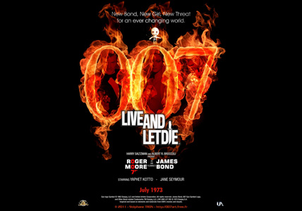
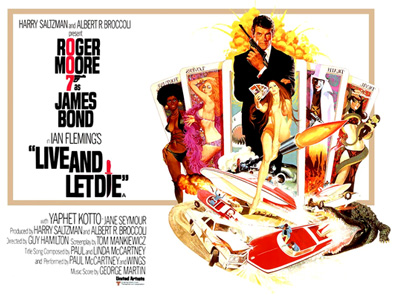
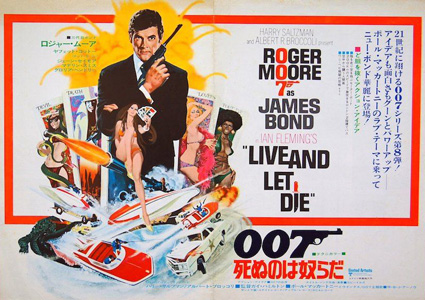
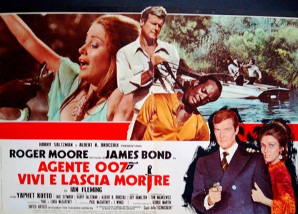

Albert R. Broccoli
Tom Mankiewicz
Raymond Poulton
John Shirley
Felix Leiter: Bond's CIA colleague. Leiter is also investigating Mr. Big.
Three MI6 agents are killed under mysterious circumstances within 24 hours in the United Nations headquarters in New York City, New Orleans and the Caribbean nation of San Monique, while monitoring the operations of the island's dictator, Dr. Kananga. James Bond - Agent 007 - is sent to New York to investigate. Kananga is also in New York, visiting the United Nations. Just after Bond arrives, his driver is shot dead by Whisper, one of Kananga's men, while taking Bond to meet Felix Leiter of the CIA. Bond is nearly killed in the ensuing car crash.
A trace on the killer's licence plate eventually leads Bond to Mr. Big, a ruthless gangster who runs a chain of restaurants throughout the United States. It is here that Bond first meets Solitaire, a beautiful tarot reader who has the power of the Obeah and can see both the future and remote events in the present. Mr. Big, who is actually Kananga in disguise, demands that his henchmen kill Bond, but Bond overpowers them and escapes unscathed. Bond flies to San Monique, where he meets Rosie Carver, a CIA double agent. They meet up with a friend of Bond's, Quarrel Jr., who takes them by boat near Solitaire's home. Bond suspects Rosie of working for Kananga and she is killed by Kananga to stop her confessing the truth to Bond. Inside Solitaire's house, Bond uses a stacked tarot deck of cards that show only "The Lovers" to trick her into thinking that fate is meant for them; Bond then seduces her. Solitaire loses her ability to foretell the future when she loses her virginity to Bond, and she decides to cooperate with Bond based both upon her attraction to him as well as her having grown tired of being controlled by Kananga.
Bond and Solitaire escape by boat and fly to New Orleans. There, Bond is captured by Kananga. Kananga is revealed to be producing heroin. He is protecting the poppy fields by exploiting San Monique locals' fear of voodoo priest Baron Samedi, as well as the occult. Through his alter ego Mr. Big, Kananga plans to distribute the heroin free of charge at his restaurants, which will increase the number of addicts. He intends to bankrupt other drug dealers with his giveaway, then charge high prices for his heroin later in order to capitalise on the huge drug dependencies he has cultivated.
Angry at her for having sex with Bond and that her ability to read tarot cards is now gone, Kananga turns Solitaire over to Baron Samedi to be sacrificed. Meanwhile, Kananga's one-armed henchman, Tee Hee Johnson, leaves Bond to be eaten by alligators at a farm in the Louisiana backwoods. Bond escapes by running along the animals' backs to safety. After setting a drug lab on fire, he steals a speedboat and escapes, pursued by Kananga's men, Sheriff J.W. Pepper and the Louisiana State Police.
Bond travels to San Monique and sets timed explosives throughout the poppy fields. He rescues Solitaire from the voodoo sacrifice and throws Samedi into a coffin of venomous snakes. Bond and Solitaire escape below ground into Kananga's lair. Kananga captures them both and proceeds to lower them into a shark tank. However, Bond escapes and forces Kananga to swallow a compressed-gas pellet used in shark guns, causing his body to inflate and explode.
Leiter puts Bond and Solitaire on a train leaving the country. Tee Hee sneaks aboard and attempts to kill Bond, but Bond cuts the wires of his prosthetic arm and throws him out the window. As the film ends, a laughing Samedi is revealed to be perched on the front of the speeding train.
Producers Broccoli and Saltzman tried to convince Sean Connery to return as James Bond, but he declined. At the same time United Artists approached both Batman actor Adam West and Burt Reynolds. Reynolds told the studios that Bond should be played by an Englishman and turned the offer down. Among the actors to test for the part of Bond were Julian Glover, John Gavin, Jeremy Brett, Simon Oates, John Ronane and William Gaunt. The main frontrunner for the role was Michael Billington. United Artists was still pushing to cast an American to play Bond but Albert Broccoli insisted that the part should be played by a British actor and put forward Roger Moore. After Moore was chosen, Billington remained on the top of the list in the event that Moore would decline to come back for the next film. Billington ultimately played a brief role in the pre-credit sequence of The Spy Who Loved Me (1977). Moore, who had been considered by the producers before both Dr. No and On Her Majesty's Secret Service, was ultimately cast. He tried not to imitate either Connery's or his own prior performance as Simon Templar in The Saint, and Mankiewicz fitted the screenplay into Moore's persona by giving more comedy scenes and a light-hearted approach to Bond.
Mankiewicz had thought of turning Solitaire into a black woman, with Diana Ross as his primary choice. However, Broccoli and Saltzman decided to stick to Fleming's description of a white woman, and, after thinking of Catherine Deneuve, Jane Seymour who was in the TV series The Onedin Line, was cast for the role. Yaphet Kotto was cast while making another movie for United Artists, Across 110th Street. Kotto reported one of the things he liked in the role was Kananga's interest in the occult, "feeling like he can control past, present and future".
Mankiewicz created Sheriff J.W. Pepper to add a comic relief character. Portrayed by Clifton James, Pepper appeared again in The Man with the Golden Gun. Live and Let Die is also the first of two films featuring David Hedison as Felix Leiter, who reprised the role in Licence to Kill. Hedison had said "I was sure that would be my first and last", before being cast again.
Madeline Smith, who played Miss Caruso, sharing Bond's bed in the film's opening, was recommended for the part by Roger Moore after he had appeared with her on TV. Smith said that Moore was extremely polite to work with, but she felt very uncomfortable being clad in only blue bikini panties while Moore's wife (Luisa Mattioli) was on set overseeing the scene.
Live and Let Die was the only Bond film until Casino Royale (2006) not to feature 'Q', played at this stage by Desmond Llewelyn. He was then appearing in the TV series Follyfoot, but was written out of three episodes to appear in the film. By then, Saltzman and Broccoli decided not to include the character, feeling that "too much was being made of the films' gadgets", and decided to downplay this aspect of the series, much to Llewelyn's annoyance.
Principal photography began in October 1972, in Louisiana. For a while only the second unit was shot after Moore was diagnosed with kidney stones. In November production moved to Jamaica, which doubled for the fictional San Monique. In December, production was divided between interiors in Pinewood Studios and location shooting in Harlem. The producers were reportedly required to pay protection money to a local Harlem gang to ensure the crew's safety. When the cash ran out, they were "encouraged" to leave. Some exteriors were in fact shot in Manhattan's Upper East Side as a result of the difficulties of using real Harlem locations.
Yaphet Kotto later stated "There were so many problems with that script … I was too afraid of coming off like Mantan Moreland … I had to dig deep in my soul and brain and come up with a level of reality that would offset the sea of stereotype crap that Tom Mankiewicz wrote that had nothing to do with the Black experience or culture." Kotto said he did this by drawing "on a real life situation I was going through and that saved me … But the way Kananga dies was a joke … The entire experience was not as rewarding as I wanted it to be."
Ross Kananga suggested the stunt of Bond jumping on crocodiles, and was enlisted by the producers to perform it. The scene took five takes to be completed, including one in which the last crocodile snapped at Kananga's heel, tearing his trousers. The production also had trouble with snakes. The script supervisor was so afraid that she refused to be on set with them; an actor fainted while filming a scene where he is killed by a snake; Jane Seymour became terrified as a reptile got closer, and Geoffrey Holder only agreed to fall into the snake-filled casket because Princess Alexandra was visiting the set.
The boat chase was filmed in Louisiana around the Irish Bayou area, with some interruption caused by flooding. Twenty-six boats were built by the Glastron boat company for the film. Seventeen were destroyed during rehearsals. The speedboat jump scene over the bayou, filmed with the assistance of a specially-constructed ramp, unintentionally set a Guinness World Record at the time with 110 feet (34 m) cleared. The waves created by the impact caused the following boat to flip over.
The chase involving the double-decker bus was filmed with a second-hand London bus adapted by having a top section removed, and then placed back in situ running on ball bearings to allow it to slide off on impact. The stunts involving the bus were performed by Maurice Patchett, a London Transport bus driving instructor.



